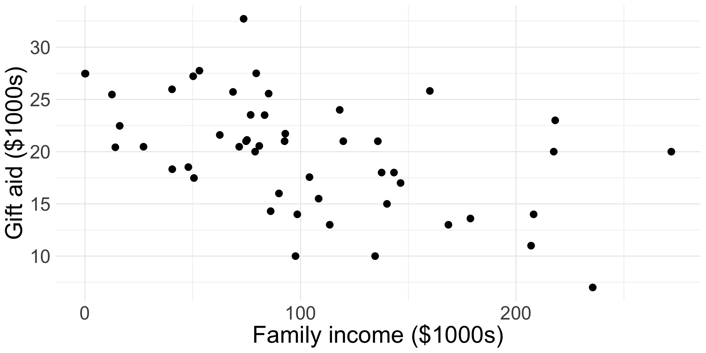
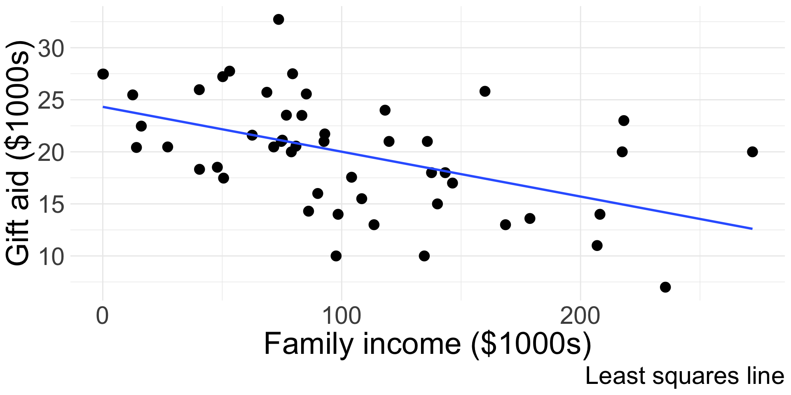
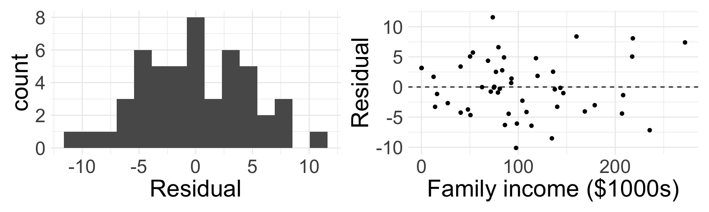

SLR coefficient estimates
11/7/24
Housekeeping
No TA hours tonight
Will discuss details of Midterm 2 next week!
Revisions for proposals due Saturday 11:59pm
Recap
- Linear regression: statistical method where the relationship between variable \(x\) and variable \(y\) is modeled as a line + error:
\[ y = \underbrace{\beta_{0} + \beta_{1} x}_{\text{line}} + \underbrace{\epsilon}_{\text{error}} \]
\(\beta_{0}\) and \(\beta_{1}\) are population parameters and their corresponding point estimates \(b_{0}\) and \(b_{1}\) are estimated from the data
Fitted model: \(\hat{y} = b_{0} + b_{1}x\)
Residual: \(e_{i} = \hat{y}_{i} - y_{i}\)
LINE conditions: Linearity, Independence, Normal residuals, Equal variance
Fitting the least-squares line
Parameter estimates
- Like in previous topics, we have to estimate the parameters using data
- We want to estimate \(\beta_{0}\) and \(\beta_{1}\) using the \((x_{i}, y_{i})\)
- In practice, we let software do this for us
- However, we can derive the least-squares estimates using properties of the least-squares line
Estimating slope and intercept
First obtain \(b_{1}\):
\[ b_{1} =\frac{s_{y}}{s_{x}} R \]
where:
\(s_{x}\) and \(s_{y}\) are the sample standard deviations of the explanatory and response variables
\(R\) is the correlation between \(x\) and \(y\)
Then obtain \(b_{0}\):
\[b_{0} = \bar{y} - b_{1} \bar{x}\] where
\(\bar{y}\) is the sample mean of the response variable
\(x\) is the sample mean of the explanatory variable
Take STAT 0211 or 0311 to see where these formulas come from!
Fitting cherry model (by hand)
Verify estimates \(b_{0} = -36.94\) and \(b_{1} = 5.07\) from our model for the cherry data:
| variable | mean | s |
|---|---|---|
| diam | 13.248 | 3.138 |
| volume | 30.171 | 16.438 |
Set-up the calculations:
\(b_{1} = \frac{s_{y}}{s_{x}} R\)
\(b_{0} = \bar{y} -b_{1} \bar{x}\)
\(b_{1} = \frac{16.438}{3.138} \times 0.967 = 5.07\)
\(b_{0} = 30.171 - 5.07 \times 13.248 = -36.94\)
What do these numbers really mean?
Interpreting parameters
Interpreting the parameters (i.e. coefficients) in a regression model is one of the most important steps in an analysis!
Intercept interpretation
Our fitted model is \(\hat{y} = b_{0} + b_{1}x\).
- To interpret the estimate of the intercept coefficient \(b_{0}\), simply plug in \(x= 0\):
\[ \hat{y} = b_{0} + b_{1} x = b_{0} + b_{1}(0) = b_{0} \]
- So, the intercept describes the average/expected value of the response variable \(y\) if \(x=0\)
Intercept in cherry model
\[ \widehat{\text{volume}} = -36.94 + 5.07 \times \text{diameter} \]
- Interpretation of intercept in context: for a tree with a diameter of 0 inches, the expected volume would be -36.94 cubic feet
- This interpretation is mathematically correct, but practically speaking is useless
- The intercept’s interpretation only makes sense when a value of \(x=0\) for the explanatory variable is plausible!
- This is typically not the case/relevant in many applications
- Trees with 0 diameter are not able to sampled
Slope interpretation
- Let \(\hat{y}_{1}\) be the estimated response for a given value of \(x\), so \(\hat{y}_{1} = b_{0} + b_{1} x\)
- What happens when we increase \(x\) by 1?
- Let \(\hat{y}_{2}\) be the estimated response for \(x +1\):
\[ \begin{align*} \hat{y}_{2} &= b_{0} + b_{1} (x + 1) \\ &= \color{orange}{b_{0} + b_{1}x} + b_{1} \\ &= \color{orange}{\hat{y}_{1}} + b_{1} \Rightarrow \\ b_{1} &= \hat{y}_{2} - \hat{y}_{1} \end{align*} \]
- Interpretation: for a 1 unit increase in the explanatory variable \(x\), we expect the response variable to change by \(b_{1}\) units
Slope in cherry model
\[ \widehat{\text{volume}} = -36.94 + 5.07 \times \text{diameter} \]
- Interpretation in context: for every 1 inch increase in diameter, we expect that volume of cherry trees to increase by 5.07 cubic feet
Example: elmhurst
The elmhurst dataset from openintro provides a random sample of 50 students gift aid for students at Elmhurst College.
- We will examine the relationship between the family income of the student and the gift aid that student received (in $1000s)

Are the first two conditions of LINE satisfied?
Example: elmhurst (cont.)
We run the model in R, and the output looks something like this:
| term | estimate | std.error | statistic | p.value |
|---|---|---|---|---|
| (Intercept) | 24.319 | 1.291 | 18.831 | 0 |
| family_income | -0.043 | 0.011 | -3.985 | 0 |

The values in the estimate column are our \(b_{0}\) and \(b_{1}\):
- \(b_{0} =\) ? and \(b_{1} =\) ?
- What do you think the second column is?
Write out our fitted model in context
Example: elmhurst model
\[ \widehat{\text{aid}} = 24.319 + -0.043 \times \text{family_income} \]
- Before we interpret the coefficients, we should verify that the linear model is appropriate for the data!

Do you believe the last two conditions of LINE are satisfied?
Example: elmhurst interpretation
\[ \widehat{\text{aid}} = 24.319 + -0.043 \times \text{family_income} \]
Interpret the slope in context
Interpret the intercept in context
Is the meaning of the intercept relevant?
- Slope: for every $1000 increase in family income, we expect that the student’s gift aid will decrease by $43.
- Intercept: for a student whose family income is $0, we expect that average amount of aid they will receive is $2.4319^{4}
- Since a family could have an income of $0, the intercept does seem relevant
Words of caution
The estimates from the fitted model will always be imperfect
- The linear equation is good at capturing trends, no individual outcome will be perfectly predicted
Do not try to use the model for \(x\) values beyond the range of the observed \(x\)!
The true relationship between \(x\) and \(y\) is almost always much more complex than our simple line
We do not know how the relationship behaves outside our limited window
Extrapolation
Suppose we would like to use our fitted model to estimate the expected gift aid for someone whose family income is $1,000,000:
Find the estimated gift aid (careful with units)
- \(\widehat{\text{aid}} = 24.319 + -0.043 \times 1000 = -18.681\)
- This is ridiculous!
This is an example of extrapolation: using the model to estimate values outside the scope of the original data
- We should never extrapolate!
Strength of fit
If we fit a model and determine LINE was met, we still need a way to describe how “good” the fit is!
Describing the fit
Recall sample correlation \(R\) describes the linear relationship between variables \(x\) and \(y\)
We typically use the coefficient of determination or \(R^2\) (R-squared) to describe strength of linear fit
- Describes amount of variation in \(y\) that is explained by predictor \(x\) in the least squares line
It turns out that \(R^2\) in SLR is exactly … \(R\) squared (i.e. the square of the sample correlation)
What are the possible values of \(R^2\)? What are desirable values of \(R^2\)?
Example: elmhurst model fit
The sample correlation between
family incomeandaidis \(R=\) -0.499So the coefficient of determination is \(R^2 = (-0.499)^2 = 0.249\)
- Interpretation: using a linear model, about 24.9% of the variability in
aidreceived by the student is explained byfamily income
- Interpretation: using a linear model, about 24.9% of the variability in
Categorical predictor
Thus far, we have assumed that \(x\) is numerical. Now let \(x\) be categorical.
Categorical predictor with two levels
Remember that the different groupings/categories of categorical variables are called levels
Now assume that \(x\) is categorical with two levels
Running example: the
possumdata fromopenintro- Response variable:
tail_l(tail length in cm) - Explanatory variable:
pop(eitherVicorother)
- Response variable:
Maybe we would think to write our regression as
\[\text{tail length} = \beta_{0} + \beta_{1} \text{pop} + \epsilon\]
Why doesn’t this work?
- Functions require a numerical input!
Indicator variables
We need a mechanism to convert the categorical levels into numerical form!
- This is achieved through an indicator variable which takes the value 1 for one specific level and the value 0 otherwise:
\[ \text{pop_other} = \begin{cases} 0 & \text{ if pop = Vic} \\ 1 & \text{ if pop = other} \end{cases} \]
| tail_l | pop | pop_new |
|---|---|---|
| 38.0 | other | 1 |
| 34.0 | Vic | 0 |
| 36.0 | Vic | 0 |
| 36.5 | Vic | 0 |
| 41.5 | other | 1 |
The level that corresponds to 0 is called the base level
- So
Vicis the base level - Choosing which level is the base level can sometimes be important
- So
Example: possum model
This yields the SLR model
\[\text{tail length} = \beta_{0} + \beta_{1} \text{pop_other} + \epsilon\]
Our estimates are as follows:
| term | estimate | std.error | statistic | p.value |
|---|---|---|---|---|
| (Intercept) | 35.935 | 0.253 | 142.065 | 0 |
| popother | 1.927 | 0.339 | 5.690 | 0 |
Write out the equation of our fitted model
Intercept for categorical \(x\)
Our fitted model is:
\[\widehat{\text{tail length}} = 35.935 + 1.927 \times \text{pop_other}\]
- Let’s interpret the intercept by plugging in \(0\) for the explanatory variable:
\[\widehat{\text{tail length}} = 35.935 + 1.927\times 0 = 35.935\]
But wait, when is \(\text{pop_other} = 0\)? When the possum is from Victoria!
So when \(x\) is categorical, the interpretation of \(b_{0}\) is the expected value of the response variable for the base level of \(x\)
Interpret \(b_{0}\) in context
- The expected tail length of possums from Victoria is 35.935 cm
Slope for categorical \(x\)
\[\widehat{\text{tail length}} = 35.935 + 1.927\times \text{pop_other}\]
\[ \text{pop_other} = \begin{cases} 0 & \text{ if pop = Vic} \\ 1 & \text{ if pop = other} \end{cases} \]
Remember, the slope coefficient is interpreted as the expected change in \(y\) for a one unit increase in \(x\)
What does it mean for the indicator variable to increase by one unit here?
- \(\text{pop_other}\) increases by one unit by going from 0 to 1. This corresponds to a
popvalue of “other”
- \(\text{pop_other}\) increases by one unit by going from 0 to 1. This corresponds to a
When \(x\) is categorical, the interpretation of \(b_{1}\) is the expected change in \(y\) when moving from the base level to the non-base level
Try interpreting \(b_{1}\) in context!
Slope for categorical \(x\) (cont.)
\[\widehat{\text{tail length}} = 35.935 + 1.927\times \text{pop_other}\]
\[ \text{pop_other} = \begin{cases} 0 & \text{ if pop = Vic} \\ 1 & \text{ if pop = other} \end{cases} \]
- Interpretation of slope: possums from outside of Victoria are expected to have tail lengths about 1.927 cm longer than possums from Victoria
- Note: interpretations for \(b_{0}\) and \(b_{1}\) for categorical \(x\) are the same as for numerical \(x\), but they have more specific/nuanced interpretations when placed in context
Assessing linear fit
When \(x\) is categorical, the LINE conditions still need to hold
When \(x\) only has two levels, the Linearity assumption will always be satisfied
We need to evaluate Nearly normal residuals and Equal variance for each level: